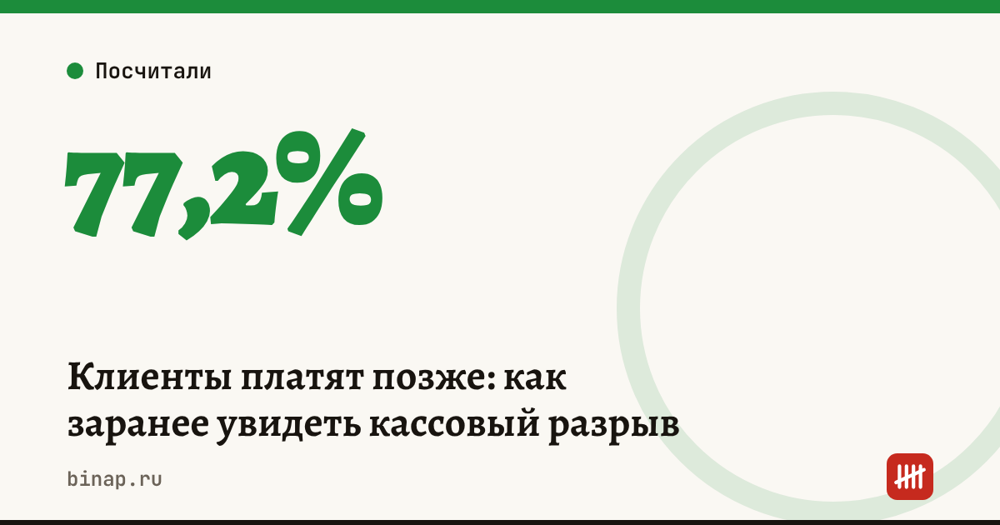

Клиенты платят позже: как заранее увидеть кассовый разрыв

Клиенты стали чаще платить с опозданием, и прибыльный бизнес может остаться без денег к дате платежа поставщику. Увидеть такую дыру заранее помогает календарь остатков по датам: на каждый день — сколько денег будет на счёте. Смотреть нужно на минимальный остаток, а не на итог месяца.
Коротко
- По исследованию «СПАРК-Интерфакса», которое приводят «Ведомости», доля компаний без просрочек в платежах снизилась с 83,8% в IV квартале 2025 года до 77,2% во II квартале 2026-го.
- Хуже всего с расчётами в транспорте и логистике, лучше — в бюджетных секторах и потребительских услугах.
- Прибыль и деньги на счёте — разные вещи: продажа в плюс не значит, что деньги придут раньше, чем нужно платить.
- Остаток на дату = остаток накануне + поступления − платежи. Главная цифра — минимальный остаток.
- Обещанные деньги не считайте полученными: помечайте статус каждого поступления.
Сроки, изменения и разборы для ИП и самозанятых — каждое утро в Telegram и MAX. Подпишитесь, чтобы не пропустить.
Пример: прибыль есть, денег нет
Пример по логике разбора на vc.ru, цифры условные. Продажа — 150 000 ₽, себестоимость — 100 000 ₽, прочие расходы — 20 000 ₽, прибыль до налогов — 30 000 ₽. На счёте 40 000 ₽.
| Дата | Операция | Остаток |
|---|---|---|
| 1-е | остаток | 40 000 ₽ |
| 5-е | платёж поставщику −100 000 ₽ | −60 000 ₽ |
| 7-е | прочие расходы −20 000 ₽ | −80 000 ₽ |
| 15-е | оплата клиента +150 000 ₽ | 70 000 ₽ |
Бизнес в плюсе, но с 5-го по 15-е денег не хватает, а самый глубокий провал — 80 000 ₽.
Если клиент задержит оплату (расчёт редакции): деньги приходят не 15-го, а 25-го. Минимум тот же — −80 000 ₽, но в минусе вы уже не 10 дней, а 20. Каждый день провала — это просроченный платёж, пени или проценты по кредиту.
Как собрать календарь остатков
- Запишите все платежи и поступления на 30 дней вперёд с датами.
- У каждого поступления поставьте статус: «получено», «срок по договору», «обещано клиентом». Считайте только первые два.
- Налоги, взносы и зарплату добавьте отдельными строками — их не переносят.
- Посчитайте остаток на каждую дату и найдите минимум.
- Обновляйте календарь раз в неделю и после каждой крупной отгрузки.
Нейросеть может собрать такую таблицу из ваших списков — но реквизиты и данные клиентов заменяйте условными названиями, а итог проверяйте вручную. Готовая инструкция — ИИ-агент «Кассовый план на 4 недели».
Что делать, если видна дыра
| Способ | Как работает | Что учесть |
|---|---|---|
| Аванс от клиента | часть оплаты до отгрузки | в примере аванс 80 000 ₽ до 5-го закрывает провал до нуля, но запаса не даёт |
| Отсрочка у поставщика | платёж позже | зафиксируйте письменно |
| Стоп-отгрузка должникам | новая отгрузка — только после оплаты старой | договоритесь о правиле заранее |
| Овердрафт или кредит | закрывает разрыв на дни или недели | считайте полную стоимость, а не ставку |
| Факторинг | банк платит за отгрузку сразу | комиссия съедает часть маржи |
Сравнить условия кредита или овердрафта на кассовый разрыв: ссылка
Подрядчикам, у которых оплата приходит после приёмки, — калькулятор кассового разрыва. Новых клиентов с отсрочкой проверяйте до отгрузки — как проверить контрагента. Если задерживает маркетплейс — что собрать и как посчитать проценты.
Частые вопросы
Чем кассовый разрыв отличается от убытка? Убыток — когда расходы за период больше выручки. Кассовый разрыв — когда деньги приходят позже, чем нужно платить, даже при прибыли.
Можно ли отложить обязательные платежи? Налоги, взносы и зарплату — нет. Двигать можно сроки поступлений, договорённости с поставщиками и необязательные траты.
Как часто обновлять календарь? Раз в неделю и после каждой крупной отгрузки или платежа.